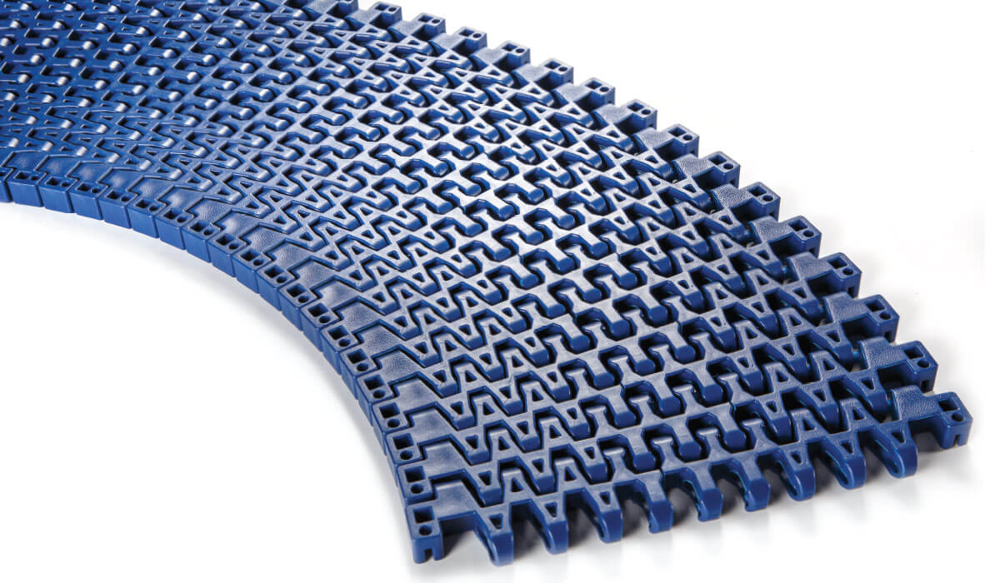

1. Bandas Transportadoras Modulares
Múltiples pasos y configuraciones para líneas rectas, curvas y procesos continuos.

Paso 50,8 mm (BT50,8)
Rectas de gran capacidad de carga, resistencia al impacto y alta durabilidad en líneas pesadas.
📄 Ficha Técnica (PDF)
Paso 25,4 mm (BT25,4)
Soluciones curvas y rectas versátiles. Disponibles en versiones Flat Top, Flush Grid y Curvas EC-FT-R.
📄 Ficha Técnica (PDF)
Paso 12,7 mm (BT12,7)
Diseñadas para transferencias reducidas de producto delicado, optimizando el paso de cuchilla.
Solicitar Info →
Micro Paso (0,8 mm)
Mapeo de mínimo diámetro para pequeñas piezas y productos altamente delicados.
Solicitar Info →
Piñones, Tacos y Aletas
Componentes modulares: piñones partidos e inyectados, perfiles de arrastre y empujadores laterales.
Consultar Medidas →2. Bandas de PVC y Poliuretano (PU)
Cintas alimentarias, industriales y de logística con recubrimientos de alta calidad.

Bandas de PVC Industrial
Excelente flexibilidad y ligereza. Resistentes a aceites, grasas de corte y productos químicos suaves.
Consultar Opciones →.png)
Bandas de Poliuretano (PU)
Atóxicas (FDA/EU), con alta resistencia microbiológica, de fácil limpieza para contacto directo alimentario.
Consultar Opciones →3. Bandas Transportadoras de Goma
Diseñadas para sectores exigentes: minería, canteras, agricultura, áridos y reciclaje.
.png)
Goma Anti-Abrasiva e Impacto
Alta resistencia a la rotura, cortes e impactos pesados. Excelente durabilidad a la intemperie.
Solicitar Cotización →.jpeg)
Goma Especial y Nervada
Variantes perfiladas y de alta inclinación para el transporte de graneles y materiales sueltos.
Solicitar Info →4. Bandas Transportadoras Metálicas
Soporte para temperaturas extremas, congelado, horneado, secado y lavado continuo.
.jpeg)
Bandas de Malla Metálica
Excelente ventilación, alta resistencia mecánica y térmica en procesos de cocción o congelación.
Consultar Modelos →.png)
Mallas de Varillas y Placas
Estructuras reforzadas para transporte pesado y líneas con drenaje continuo de líquidos.
Consultar Modelos →5. Colas para Empalmes en Frío
Adhesivos de alta resistencia para uniones duraderas en cintas de goma y PVC.
.jpeg)
Adhesivo de Contacto en Frío
Elasticidad permanente para revestimiento de tambores, recubrimiento anti-desgaste y uniones rápidas en planta.
Ficha de Seguridad →.png)
Primers y Limpiadores
Soluciones químicas complementarias para la preparación de superficies antes del vulcanizado o pegado.
Solicitar Info →6. Accesorios y Protección de Línea
Componentes complementarios para mejorar el rendimiento y vida útil de tus transportadores.
Rascadores, Cunas y Limpiadores
Rascadores primarios/secundarios, cepillos rotativos, cunas de impacto y protectores de rodillo.
Consultar Disponibilidad →.jpeg)
Sistemas de Faldillas y Guiado
Perfiles de estanqueidad, sistemas de faldillas y elementos de protección para evitar fugas de producto.
Consultar Disponibilidad →